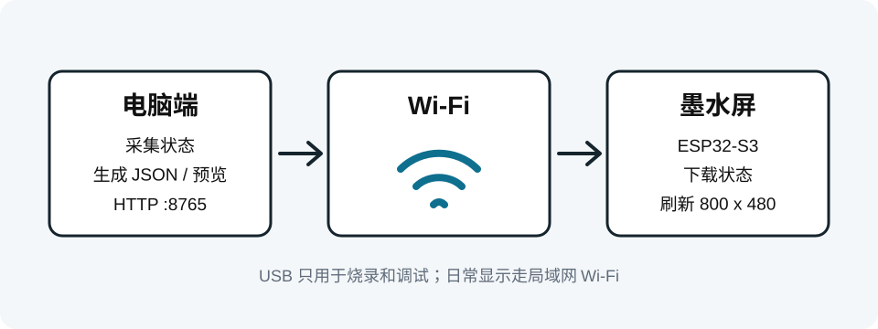
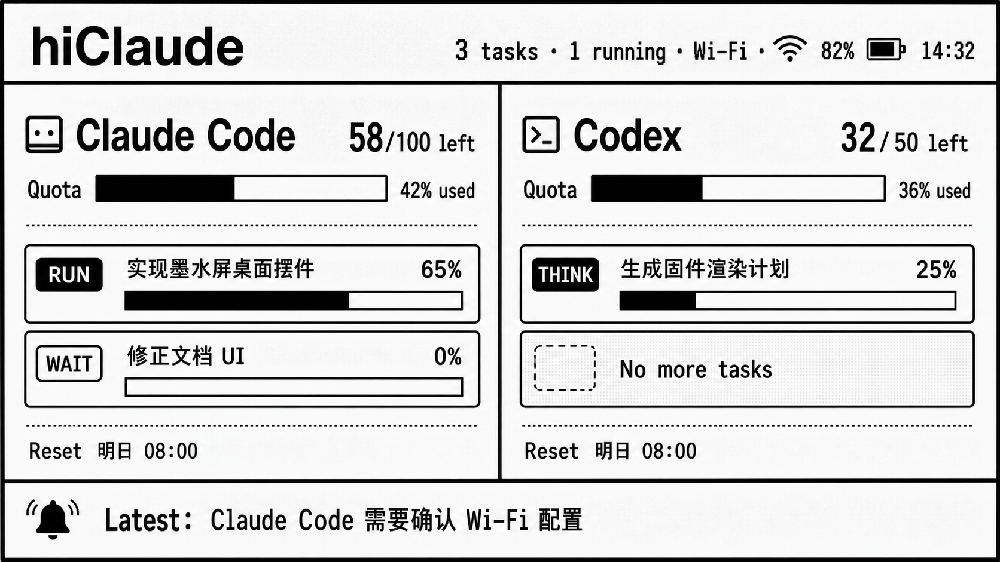

hiClaude 墨水屏桌面摆件实施指南
用 LilyGo T5-ePaper-S3 4.7" 显示 Claude Code / Codex 额度和任务状态。
硬件：LilyGo T5 4.7 英寸 e-Paper（ESP32-S3）
多任务队列
Claude Code / Codex 额度
最新提醒

0. 整体路线
先买对硬件
只围绕
LilyGo T5 4.7" e-Paper 做，避免混入其他尺寸或微雪/树莓派路线。
先跑官方示例
确认屏幕、USB-C、Wi-Fi、电池、触摸都正常，再写项目固件。
电脑负责状态
Claude Code / Codex 状态由电脑端维护，屏幕通过 Wi-Fi 拉取。
1. 最终采购选择
LilyGo T5-ePaper-S3 4.7 英寸 e-Paper 显示屏
4.7"
电子墨水屏
960×540
16 级灰度
ESP32-S3R8
16MB Flash / 8MB PSRAM
Wi-Fi / BLE
带电池、RTC、SD 卡槽
| 项目 | 说明 |
|---|---|
| 主控 | ESP32-S3R8，16MB Flash + 8MB PSRAM，Wi-Fi / BLE 5.0 |
| 屏幕 | 4.7 寸墨水屏，960×540，16 级灰度 |
| 电池 | 支持锂电池，ADC 电量检测（GPIO14） |
| 其他 | USB-C、SD 卡槽（SPI）、PCF8563 RTC、触摸可选 |
确认标题含
T5 4.7 inch e-Paper 或 T5-ePaper-S3，别买成其他尺寸或 T-Display 系列。
2. 到货后先做检查
只接 USB-C，确认电脑能识别串口。
跑官方示例，确认屏幕完整刷新。
拍照和量尺寸。
- 屏幕无裂纹，排线无折痕。
- 板子、电池连接器、按键齐全。
- 不要装外壳、不要固定胶、不要焊接。
- USB-C 数据线接电脑，确认识别串口。
- 拍正反面照片，记录接口和孔位。
3. 本机先跑通状态服务
在你的电脑上进入项目目录：
cd /home/midea/GithubRepository/HiClaude生成演示状态
PYTHONPATH=src python3 -m agent_epaper.cli demo启动本机预览服务
PYTHONPATH=src python3 -m agent_epaper.server --host 0.0.0.0 --port 8765浏览器打开：
http://127.0.0.1:8765/
http://127.0.0.1:8765/state.json
http://127.0.0.1:8765/screen.svg更新一个任务状态
PYTHONPATH=src python3 -m agent_epaper.cli task \
--name "实现墨水屏桌面摆件" \
--status thinking \
--progress 35 \
--detail "正在调试 T5 显示端"更新额度显示
PYTHONPATH=src python3 -m agent_epaper.cli quota \
--agent claude \
--label "Claude Code" \
--used 42 \
--limit 100 \
--reset "明日 08:00"
PYTHONPATH=src python3 -m agent_epaper.cli quota \
--agent codex \
--label "Codex" \
--used 18 \
--limit 50 \
--reset "明日 08:00"
Claude Code / Codex 无稳定公开的额度 API，第一版用命令写入；以后有官方接口再替换采集器。
4. 安装官方开发环境
先按 LilyGo 官方文档跑通示例，不要一开始就刷自己的固件。
- 打开
github.com/Xinyuan-LILYGO/LilyGo-EPD47 - 按 README 安装 Arduino IDE 或 VS Code + PlatformIO
- 安装 ESP32-S3 board support（
esp32 >= 2.0.17） - 选择
ESP32S3 Dev Module，Flash 16MB、PSRAM 8MB OPI - 烧录官方示例，确认屏幕完整刷新
- 测试触摸（如买了触摸版）和电池 ADC
官方示例刷不动就先排查 USB 驱动、串口、线材、BOOT 模式，不要继续改本项目代码。
5. 电脑和墨水屏如何交互

电脑端 Python 服务 局域网 Wi-Fi T5-ePaper-S3
维护 state.json ← ESP32-S3 访问 → 下载状态
提供 HTTP 接口 电脑 IP 刷新 960×540 墨水屏开发阶段 USB-C 烧录和调试，日常用电池或 USB-C 供电，Wi-Fi 拉取状态。
6. 屏幕展示 UI
hiClaude 按“多任务队列看板”设计：Claude Code 和 Codex 各占一列，额度和任务列表绑定显示，底部只保留最新需要注意的提醒。

Claude Code
58/100 left
RUN
实现墨水屏桌面摆件
65%
WAIT
修正文档 UI
0%
Reset 明日 08:00
Codex
32/50 left
THINK
生成固件渲染计划
25%
No more tasks
Reset 明日 08:00
Latest: Claude Code 需要确认 Wi-Fi 配置
每列最多显示 3 个任务，超出时显示
+2 more；任务标题过长时截断，保留状态、进度和最新提醒。
7. ESP32 固件开发计划
跑通官方示例后分三步：
先连 Wi-Fi
写入 Wi-Fi 名称和密码，启动后访问电脑 /state.json。
再显示文本
先把 agent 名称、任务列表、状态、进度、额度几个字段画到屏幕上。
最后做排版
把 task 扩展成按 agent 分组的 tasks[] 队列，按第 6 节的 960×540 双列看板绘制。
电脑端负责采集和排版，ESP32 只负责联网、解析数据和刷屏。后续可用板载 RTC 离线显示。
9. 验收标准
- 电脑端能打开
http://127.0.0.1:8765/state.json。 - 修改任务状态后，浏览器预览能同步变化。
- 官方示例能让 T5 屏幕完整刷新 16 级灰度。
- ESP32-S3 能连上 Wi-Fi，并访问电脑端状态接口。
- 屏幕能显示 Claude Code / Codex 额度、各自任务队列状态和进度。
- 断开 USB-C 后，电池供电能继续工作，或至少保留最后一屏。
10. 项目文件
| 文件 | 用途 |
|---|---|
src/agent_epaper/cli.py | 更新任务状态和额度 |
src/agent_epaper/server.py | 电脑端 HTTP 服务 |
src/agent_epaper/render.py | SVG 预览渲染 |
docs/assets/hiclaude-epaper-task-queue.png | hiClaude 多任务墨水屏队列 UI 生图概念稿 |
projects/epaper-lilygo-t547/docs/REFERENCE.md | LilyGo T5 4.7 官方资料和参考 |
assets/*.svg | 流程图和产品图示 |